Un Sistema de Información es un conjunto de elementos destinados al tratamiento y administración de datos e información, organizados y listos para su posterior uso, generados para cubrir una necesidad (objetivo).
Esta definición de Sistema de Información abarca cualquier tipo de sistema, tengan o no componentes informáticos.
En este curso solo nos interesarán los Sistemas de Información de carácter informático, más concretamente los que conocemos como Sistemas Gestores de Bases de Datos (a partir de ahora SGBD).
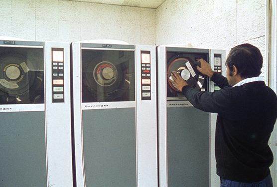
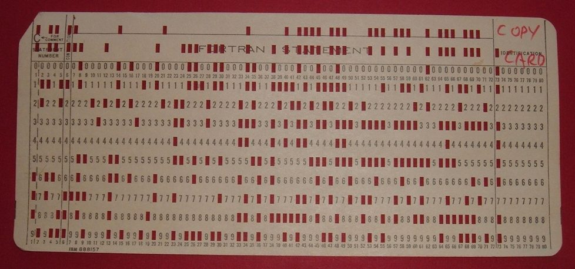
Un fichero se podría considerar como la unidad mínima de almacenamiento de cualquier tipo de información. No es más que un conjunto de registros almacenados con una estructura homogénea, que permite ser accedido para su tratamiento desde alguna aplicación informática.
En estos sistemas de información se crean diversas aplicaciones (software) para gestionar diferentes aspectos del sistema. Cada aplicación realiza unas determinadas operaciones.
En estos sistemas, cada programa almacena y utiliza sus propios datos de forma un tanto caótica. La única ventaja que conlleva esto es que los procesos son independientes, por lo que la modificación de uno no afecta al resto. Pero tiene grandes inconvenientes:
Una Base de Datos es un conjunto de ficheros interrelacionados entre sí, creados por un SGBD, que deben ser gestionados y accedidos a través de dicha herramienta.
Por lo general se tratará de una gran cantidad de información repartida entre varios ficheros, que es accedida desde una herramienta específica de forma que el usuario se abstrae de cómo está organizada dicha información.
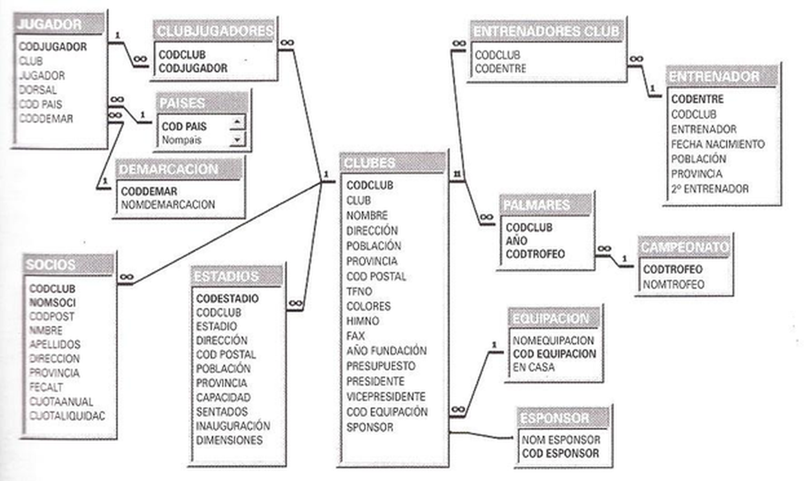
No nos interesa conocer qué ficheros forman la Base de Datos, dónde están ni cuánto ocupan. La herramienta que utilizamos se ocupa de todo ese trabajo.
Nosotros, como usuarios de una Base de Datos, tendremos a nuestra disposición todos los datos y numerosas herramientas que nos permitan trabajar con ellos de una forma cómoda (utilidades para buscar, para ordenar, para eliminar...).
La ventaja que presenta el uso de Bases de Datos frente al empleo de ficheros es el ahorro que esto supone.
Hay que pensar que en el caso de que no contemos con un SGBD para el desarrollo de una aplicación determinada, deberemos desarrollar a medida toda la parte que se refiera al almacenamiento y la gestión de todos los datos de dicha aplicación.
En un SGBD toda esa parte ya está implementada, tiene una interfaz de acceso común y adaptable a, prácticamente, cualquier entorno. Además, existen lenguajes ampliamente conocidos para el acceso y gestión de los datos almacenados (SQL en el caso de los SGBD relacionales, por ejemplo).
Por otro lado hay que tener en cuenta, según veremos más adelante, que en la actualidad existen muchos tipos de SGBD, desde lo que se conoce como el clásico SGBD relacional hasta pequeños SGBD que apenas ocupan 1 MB de espacio y no requieren instalación; otros almacenan la información como ficheros XML...
Un SGBD es una herramienta software, más o menos compleja, que permite la creación y gestión de una Base de Datos.
En el punto anterior hemos visto que una Base de Datos estaba compuesta de varios ficheros relacionados entre sí. El SGBD es la herramienta que se encarga de organizar esos ficheros manteniendo la información siempre accesible para el usuario de la forma más eficiente posible, tanto en espacio como en velocidad de acceso.
Cuando gestionamos una Base de Datos a través de un SGBD, estamos añadiendo un nivel de abstracción puesto que «no nos enteramos» exactamente de lo que ocurre con los datos, cómo se almacenan, dónde se almacenan, cuánto ocupan... puesto que es esta herramienta la que se encarga de que la Base de Datos sea consistente, esté siempre accesible, disponga de espacio en disco, y de otras muchas tareas que, dependiendo del SGBD concreto, pueden ser más o menos complejas.
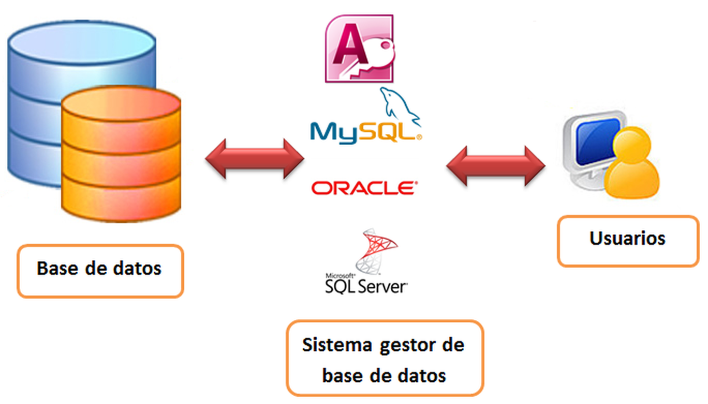
Hay que tener en cuenta que actualmente existen diferentes tipos de SGBD en cuanto al nivel de conocimientos técnicos que se requieren para trabajar con ellos.
Un SGBD como MySQL nunca podrá ser utilizado por usuarios con escasos conocimientos técnicos puesto que no está pensado como aplicación para el usuario final, sino como SGBD de apoyo para otras aplicaciones, aplicaciones web o sitios web que requieran manejar grandes cantidades de datos (Sistemas de Información).
Por otro lado, Microsoft Access o LibreOffice Base son SGBD pensados para un usuario menos técnico. No se necesitan tantos conocimientos técnicos para su manejo, y por tanto se acercan más al usuario.
Como ejemplo para entender el concepto de transacción hay que imaginar el movimiento de dinero entre dos cuentas bancarias. Se trata de una sola operación que conlleva la ejecución de más de una tarea (retirar el dinero de la cuenta origen e incrementarlo en la cuenta destino) de forma que nunca debería ejecutarse a medias (no podemos solo retirar el dinero de la cuenta origen o solo incrementar el saldo en la de destino). Se trata de una transacción, y por tanto deberá cumplir las reglas ACID para funcionar correctamente.
No todos los SGBD implementan todas las funcionalidades que se han descrito anteriormente puesto que en determinadas ocasiones no nos serán necesarias.
Por ejemplo, Microsoft Access no da soporte a acceso concurrente ni tampoco da solución a ciertos problemas de seguridad y control de acceso, pero no es uno de sus objetivos. Se trata de una Base de Datos incluida en un paquete ofimático y no debería usarse en entornos más complejos.
Sistemas como Oracle, SQL Server o MySQL implementan muy buenos soportes para acceso concurrente, seguridad, control de acceso y otras muchas funcionalidades, puesto que son soluciones destinadas a entornos más complejos.
Normalmente existe una separación clara entre los componentes principales de la gran mayoría de SGBD.
Lo más común es la separación entre lado Cliente y lado Servidor (Arquitectura Cliente-Servidor), aunque no todos los SGBD siguen esa arquitectura.
La gran parte de la funcionalidad la encontraremos en el lado del servidor, puesto que es donde se almacenarán siempre los datos. El lado cliente es una herramienta bastante simple que sirve de comunicación entre el usuario y lo que se conoce como el Motor (Engine) del SGBD, que forma la parte servidor.
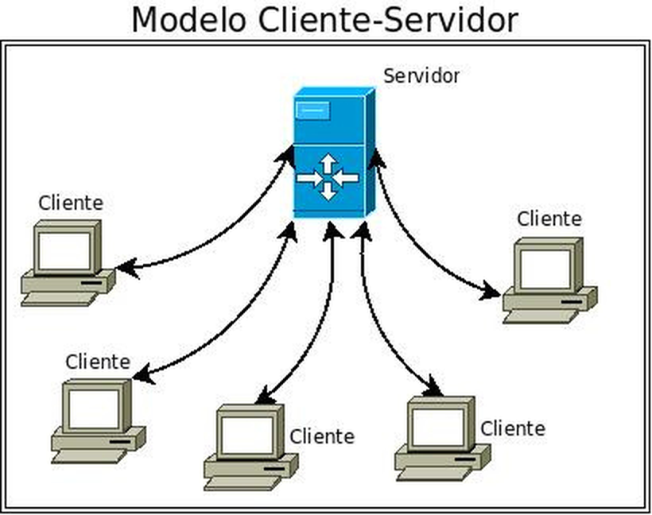
Si miramos dentro del motor de un SGBD, podemos encontrarnos los siguientes componentes:
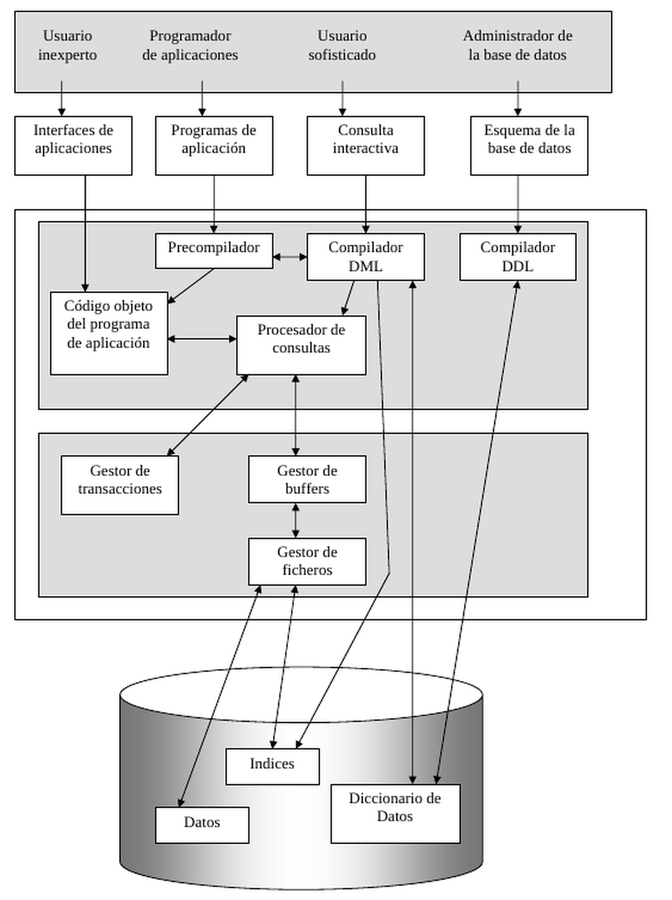
Se ajustan al modelo relacional, que es actualmente el modelo de Base de Datos más extendido. Es el modelo de datos más utilizado actualmente, basado en el concepto de tablas y las relaciones entre ellas como forma de relacionar la información entre sí. Destacan Ms Access, Oracle, Microsoft SQL Server y MySQL como los SGBD relacionales más extendidos actualmente.
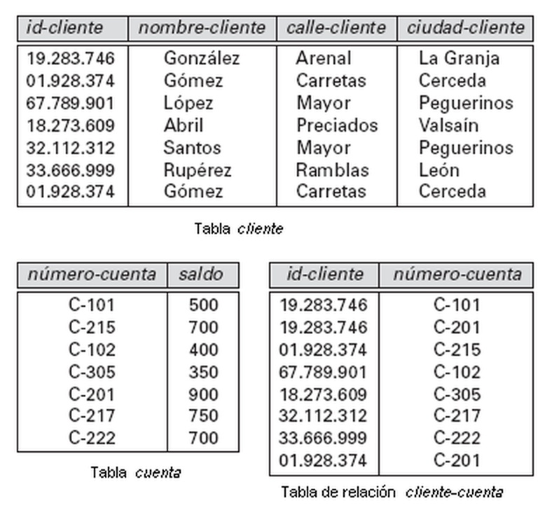
Los SGBD relacionales proporcionan una serie de funcionalidades, entre las que destacan las siguientes:
XML es un lenguaje para almacenar información de forma jerárquica. Es un lenguaje que no proporciona ninguna forma de crear, buscar, modificar o validar información. Sin embargo, se usa ampliamente para almacenar, transferir y recuperar datos jerárquicos y hay muchas herramientas para trabajar con estos ficheros de una manera sencilla.
Además, es un lenguaje muy utilizado para el intercambio de información entre aplicaciones remotas a través de Internet.
En definitiva, el lenguaje XML solo especifica la forma de escribir el fichero y organizar la información mediante las etiquetas que dan sentido a cada uno de los valores almacenados, y la jerarquía entre estas etiquetas marca la dependencia de las mismas. Así, en función del uso que queramos darle, deberemos hacernos con la herramienta determinada que nos permita gestionar el fichero XML de la forma que más nos convenga.
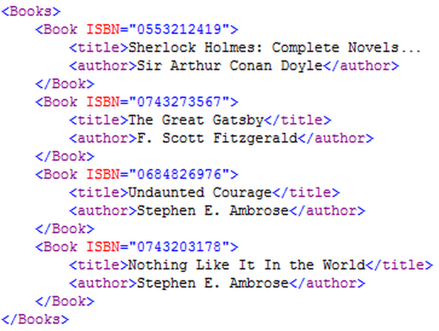
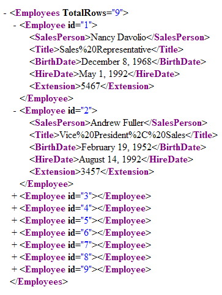
En este modelo todos los elementos de la Base de Datos se representan como objetos y siguen el paradigma de la Programación Orientada a Objetos.
El objetivo de este tipo de Bases de Datos es el trabajo en unión con algún lenguaje de programación del mismo paradigma. De esa manera los objetos de la aplicación tienen una correspondencia directa con los objetos en la Base de Datos, puesto que pueden usar el mismo modelo de datos.
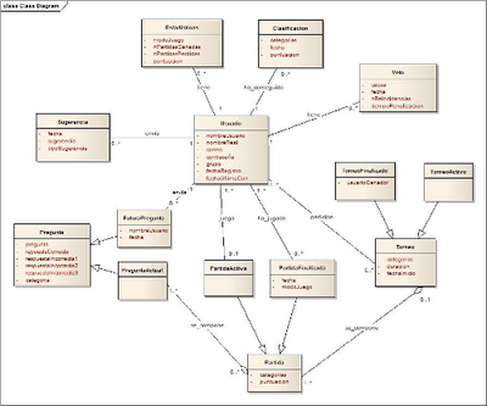
Aparecen como una extensión al modelo relacional, por lo que los datos se almacenan en forma de tablas.
Y además permiten la utilización de ciertas características propias de la Programación Orientada a Objetos (POO) como pueden ser la Herencia o el uso de tipos más complejos como son las colecciones o los campos estructurados.
Cabe destacar PostgreSQL como SGBD objeto-relacional, que actualmente está bastante extendido.
Busca información sobre la Programación Orientada a Objetos (POO):
La respuesta está en el siguiente apartado.
Resumen del artículo informativo del temario, con sus mismos conceptos. Puedes leer el artículo completo en profile.es.
La Programación Orientada a Objetos (POO) es un paradigma de programación, es decir, un modelo o estilo que guía cómo programar. Se basa en clases y objetos: el programa se estructura en piezas simples y reutilizables de código (clases) con las que se crean instancias individuales (objetos). En lugar de centrarse en la lógica pura, se piensa en los componentes del sistema y en cómo se relacionan. Lenguajes más antiguos como COBOL, Basic o C se centraban más en la lógica que en los datos; otros más modernos como Java, C# o Python usan paradigmas como este.
Por ejemplo, en un sistema de biblioteca habría objetos como libros, bibliotecarios y usuarios, con propiedades (datos) y comportamientos (funcionalidades). Un libro puede tener título, autor y año, y métodos para prestarse o devolverse. Los objetos se comunican enviándose mensajes.
Permite que el código sea reutilizable, organizado y fácil de mantener. Sigue el principio DRY (Don't Repeat Yourself) para evitar duplicar código y, con la encapsulación y la abstracción, evita el acceso no deseado a los datos.
Una clase es una plantilla que define de forma genérica cómo serán los objetos de un tipo. Una clase Animal puede tener atributos como nombre o edad y métodos como caminar o comer. Con la clase se crean instancias: por ejemplo, un gato llamado Paco, de 3 años, y un perro llamado Pancho, de 4. Comparten la lógica, pero cada uno tiene su propio estado.
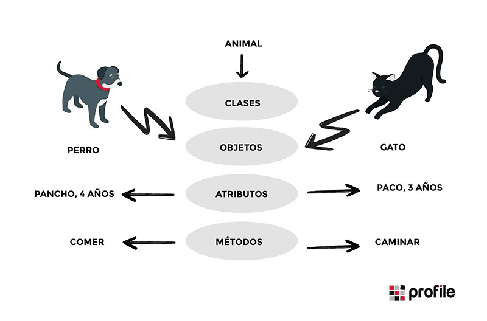
| Lenguaje | Cómo se aplica |
|---|---|
| Java | Clases con class, herencia con extends, interfaces, polimorfismo y encapsulación. |
| C++ | Clases con class, acceso public, private y protected, funciones virtuales y herencia múltiple. |
| Python | Clases con class, herencia indicando la clase base entre paréntesis, herencia múltiple, propiedades y decoradores. |
| C# | Clases con class, interfaces, polimorfismo con virtual y override, y modificadores de acceso. |
La POO es actualmente el paradigma más usado para diseñar aplicaciones. Exige pensar bien la estructura del programa y planificar antes de empezar a codificar.
Son aquellos SGBD que no permiten que más de un usuario pueda estar conectado con la Base de Datos al mismo tiempo.
Normalmente no soportan ningún tipo de control de usuario, por lo que la Base de Datos se reducirá a un simple fichero al que se podrá acceder desde la aplicación como si de cualquier otro tipo de documento se tratara.
Así, no soportan el control de concurrencia ni cualquier otra característica propia de los sistemas multiusuarios. Algunos SGBD monousuario son Ms Access y LibreOffice Base.
Permiten conexiones simultáneas con una misma Base de Datos.
Tienen soporte para control de cuentas de usuario, y por tanto incluyen todo el soporte para el control de concurrencia, propio de cualquier sistema multiusuario.
Algunos SGBD multiusuario son MySQL, PostgreSQL, Microsoft SQL Server y Oracle.
Son el tipo de Bases de Datos más común.
Normalmente, en grandes corporaciones, se dedica un único equipo para el almacenamiento y gestión de los datos utilizando algún tipo de SGBD.
Toda la Base de Datos se encuentra ubicada lógica y físicamente en ese equipo. Es la solución más habitual puesto que normalmente es suficiente y además es mucho más sencilla de implementar.
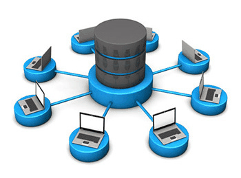
Ventajas
Desventajas
Una Base de Datos distribuida es un conjunto de bases de datos relacionadas lógicamente entre sí que se encuentran localizadas en diferentes ubicaciones físicas.
Puede tratarse de dos máquinas conectadas entre sí mediante una LAN o bien a través de Internet.
Como consecuencia, dichas Bases de Datos pueden realizar tareas de forma autónoma o bien de forma distribuida.
En el caso de las operaciones realizadas de forma distribuida, el usuario de cualquiera de las dos (o más) máquinas tendrá acceso a toda la información como si esta estuviera siendo accedida de forma local.
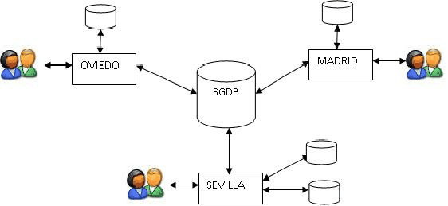
Ventajas
Desventajas
En el pasado, la informática funcionaba con el método clásico de ficheros, que estaba orientado a los procesos y provocaba que los datos se guardaran múltiples veces para distintas aplicaciones. Para solucionar esto, surgen las bases de datos, que están orientadas a los datos.
Una base de datos es un depósito de datos integrados y compartidos, con una redundancia controlada, que refleja las relaciones del mundo real. Su principal característica es que los datos se mantienen independientes de las aplicaciones que los utilizan. De este modo, los desarrolladores pueden acceder a la información sin necesidad de conocer exactamente cómo está almacenada físicamente en los discos.
Para que los usuarios no tengan que lidiar con la complejidad técnica del sistema, la arquitectura se divide en tres niveles (según la norma ANSI/X3/SPARC):
Un SGBD (como Oracle, DB2 o SQL-Server) es el conjunto de programas que hace de intermediario entre los programas de aplicación (usuarios) y los datos físicos. Su misión es proporcionar las herramientas para describir, recuperar y manipular la información.
Para lograrlo, el SGBD debe cumplir una serie de objetivos fundamentales:
El SGBD realiza su trabajo a través de tres grandes funciones:
En el ecosistema de una BD intervienen distintos perfiles:
Los SGBD trabajan siguiendo lo que se conoce como arquitectura cliente-servidor.
Siguiendo esta misma filosofía, existe la programación por capas, que consiste en una arquitectura en la que el principal objetivo es la separación de las diferentes capas lógicas de una aplicación (presentación, negocio y datos).
Por ello, la arquitectura más conocida es la arquitectura de 3 capas, en la que la estructura de la aplicación se separa en tres niveles.
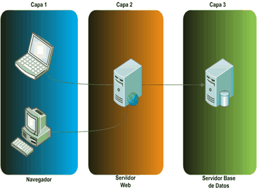
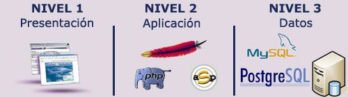
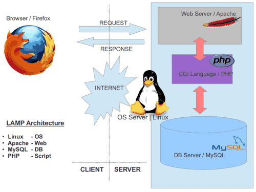